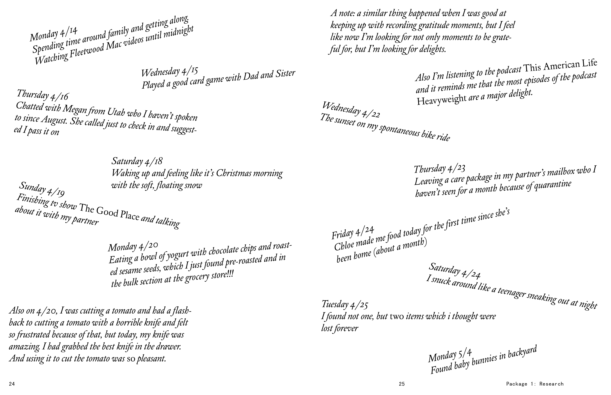

The Book of Delights (2019)
These were the parts I resonated with in Ross Gay’s The Book of Delights. The first phrase after each number is the title of the chapter and I explain my thoughts afterward.
- The High-Five from Strangers, etc. Yes, those interactions with strangers! I love those. Gay says that he delights in “unequivaocally pleasant public physical interactions.” I agree. Those interactions are so invigorating like a swim on a summer day. Whenever these pleasant interactions happens, I feel a deep love for people and I don’t always feel that normally. I think my default feeling is a fatigue and anxiety of people and having to interact with them, like today when I had to take a moment to collect myself before calling my eye doctor’s office to request receipts for my insurance company.
- Nicknames. The quick rambling off of Gay’s nicknames was so fun to listen to. “I am a bit of a nickname magnet. ‘Ross the boss, the king of applesauce.’” I laughed. I love a rhyme. Language can be so pleasurable.
- “Joy is Such a Human Madness.” In this chapter, Gay explores the relationship between pleasure and delight and offers some definitions. I think I love a definition because it gives clarity and I like clarity. “Delight is the presence of light and without light at once, or joy. The intolerable makes life worthwhile,” Gay says. Hello, my living and deceased baby bunnies! This means you!
- Umbrella in the Cafe. Gay says “butterfly, flutterby” in a poetic description of a cafe owner who has lived with cancer. Again, the language! The way he says this “butterfly, flutterby” reminds of this time when I was a camp counselor and a young boy found a caterpillar on the tennis courts and called it a “capper-diller.” I will never forget that.
- Pecans. “Pecans taste like the South cumming in my mouth.” I laughed.
- Nota Bene. Gay talk about the idea of linguistic inclusion. I don’t know if this is what he meant, but it reminded me of something I recently read in the introduction to a syfi book. The author of introduction was talking about Penguin Books holding a special place in his childhood and that the golden age of science fiction is when the reader is 12 years old. He lists a number of famous, male, science fiction authors and says that all of them “changed the inside of the head of the boy who read them.” I annotated a salty comment in the margin. I bet the introduction writer never even noticed that he did that. But I did and I felt excluded.
- Stacking Delights. Gay says, “Stacking delights defeats the purpose of temporal allegiance,” and “the need for delights to emerge from one’s dailyness. No need to hoard delight.” Wow, what a great reminder. Thanks, Ross. I think this relates to what he says about delight existing in the presence of light and without light. We love and delight in delights because the opposite of delight exists and we all know how that feels.
- Public Lying Down. I’ve never slept on a city bench, like Gay describes, but two times in my life when I was on a walk with friends in relatively secluded nature, I had the urge to lie down on the ground, and both times when it happened I just stopped walking for a moment and recognized it and thought, “Why the hell not?” and I delighted in the fulfullment of my desire. I think this has happened because I wanted to soak up that moment and be with the ground so badly, and maybe I wanted to make sure that everything that was happening was all real. Sometimes, when I want to, I can recall both of those moments with perfect clarity.
- “Joy is Such a Human Madness: The Duff Between Us.” “Joy is the mostly invisible, the underground union between us, you and me, which is among other things, the great fact of our life and the lives of everyone and thing we love going away.” What a beautiful, fluid way to describe joy, like an energy. I like thinking about joy as the reason we’re all here.
- Found Things. “Books do not mid-poem reach the forefinger and thumb into one’s mouth to gently fish out an eyelash. There are multiplicities within a human body reading poems that a poem on a page will never reproduce. In other words, books don’t die, and preferring them to people won’t prevent our doing so.” Holy shit, Ross!
I started keeping a list of things I was grateful for with the intention of doing it every day, which I didn’t, but I found an interesting pattern when I did follow through for a few days in a row: I started looking for these moments, anticipating their occurrence. I read an interview with Ross Gay after I finished his book and laughed when he in the interview he said that “gratitude journal” doesn’t sound cool. I might have to come up with my own name for whatever this is.
In this interview, Gay says that his dominant audience is himself and calls himself part cynic. “I’m my first audience, and I’m writing to figure these things out and deepen my relationship to these things, and I’m writing to delight and surprise and confuse myself, too.” Then he talks about writing for his friends and neighbors. “The Book of Delights especially is so rooted in where I live. I’m writing for my neighbors and for other people who are reading the books I’m reading, and for people who are interested in art criticism, because in some ways I think this book is criticism. And I’ve realized I’m also really writing to my brother.” Writing for friends sounds like an act of true love. He sounds so connected to his sense of place and even though I don’t quite feel that now, his description of it is reassuring.
He talks about the absence of delight, the presence of tension. “So, I think that tension is what’s interesting to me about the book because it’s true to the way I experience life. Which is to say, I am witness to and beneficiary of profound kindness and tenderness and sweetness, and I am also living amid great sorrows, and that sorrow includes and means violence and brutality and the whole thing.”
This reminds me of something mentioned in The Good Place: “Every human is a little bit sad all the time.” In his book, Gay says that everyone he’s met—everyone—holds some sorrow. Gay says in the interview, “There’s that longish essay, ‘Joy is Such Human Madness,’ where I do that little false etymology of ‘delight’ meaning ‘of light’ and ‘without light,’ and that maybe joy is both at the same time.” He also says, “You and I, we’re both going to die. And there are all sorts of apparatuses we could use to avoid or deny that, but I suspect that if we were to just sit with that fact, I think there’s some kind of understanding or knowledge between us that would be allowed to happen.”
